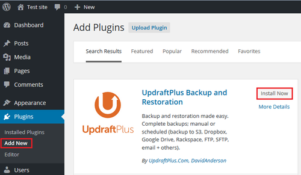
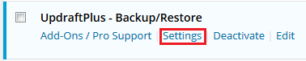
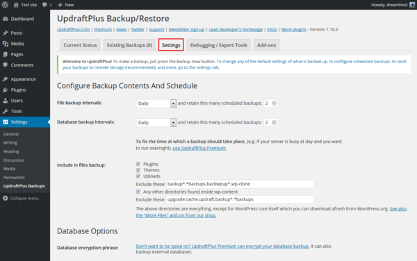
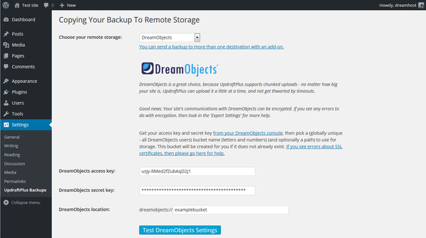
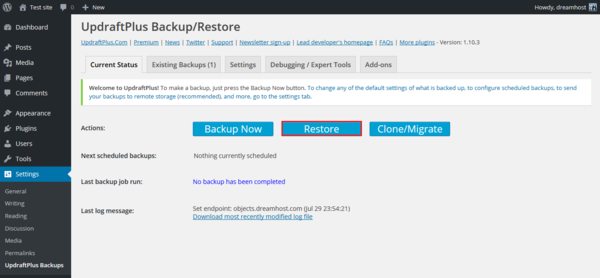
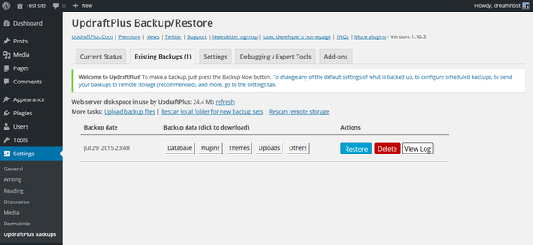

How to Use UpdraftPlus with DreamObjects
Overview
UpdraftPlus brings reliable, easy-to-use backups, restores and site copies (clones/migrations) to your WordPress site.
Installation and Configuration of Backups
Log into your WordPress site.
In the left menu, choose ‘Plugins > Add New’.
Search for ‘UpdraftPlus’. Once found click the Install Now button.
On the main ‘Plugins’ page, click the ‘Settings’ link under the plugin.
On the main page for the plugin, click the ‘Settings’ tab.
Configure UpdraftPlus to backup your files and database on the intervals you prefer.
If you would like to use an encryption phrase, click the link to purchase the paid version.
Scroll down on the same settings page to the section titled ‘Copying Your Backup To Remote Storage’.
Choose DreamObjects from the ‘remote storage’ dropdown, then enter your DreamObjects keys and existing DreamObjects bucket name.
Click the Test DreamObjects Settings button to ensure the connection works.
That’s it. You’ll now have backups of your WordPress site stored in DreamObjects.
Restore a backup

On the main UpdraftPlus plugin page, click the Restore button.
Press the Restore button to the right of a backup to restore the site.